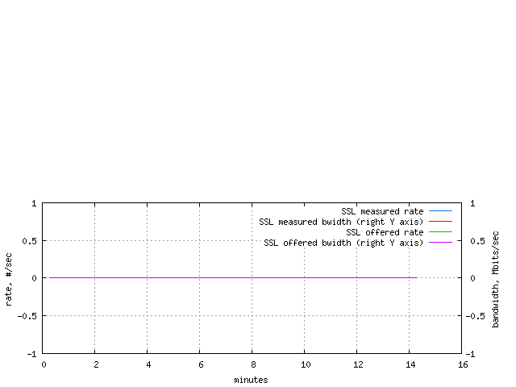

viaTransparentSmoothie: everything (scoped)
| client side | baseline | all phases | dflt |
|---|---|---|---|
| server side | baseline | all phases | dflt |
| all sides | baseline | all phases | dflt |
| highlighted cell(s) above show current scope |
|---|
| links point to other scopes |
1. Load
load trace
The load table shows offered and measured load from client side point of view. Offered load statistics are based on the request stream. Measured load statistics are based on reply messages. The 'count' column depicts the number of requests or responses.
The 'volume' column is a little bit more tricky to interpret. Offered volume is reply bandwidth that would have been required to support offered load. This volume is computed as request rate multiplied by measured mean response size. Measured volume is the actual or measured reply bandwidth.

2. SOCKS load
SOCKS load trace
The SOCKS load table shows offered and measured load from client side point of view. Offered load statistics are based on the request stream. Measured load statistics are based on reply messages. The 'count' column depicts the number of requests or responses.
The 'volume' column is a little bit more tricky to interpret. Offered volume is reply bandwidth that would have been required to support offered load. This volume is computed as request rate multiplied by measured mean response size. Measured volume is the actual or measured reply bandwidth.

3. SSL load
SSL load trace 
The SSL load table shows offered and measured load from client side point of view. Offered load statistics are based on the request stream. Measured load statistics are based on reply messages. The 'count' column depicts the number of requests or responses.
The 'volume' column is a little bit more tricky to interpret. Offered volume is reply bandwidth that would have been required to support offered load. This volume is computed as request rate multiplied by measured mean response size. Measured volume is the actual or measured reply bandwidth.
4. FTP load
FTP load trace
The FTP load table shows offered and measured load from client side point of view. Offered load statistics are based on the request stream. Measured load statistics are based on reply messages. The 'count' column depicts the number of requests or responses.
The 'volume' column is a little bit more tricky to interpret. Offered volume is reply bandwidth that would have been required to support offered load. This volume is computed as request rate multiplied by measured mean response size. Measured volume is the actual or measured reply bandwidth.

6. Client Side Hit Ratios
Client Side Hit Ratios DHR
(%)BHR
(%)offered 54.67 54.59 measured 0.00 0.00
Document hit ratio trace
Byte hit ratio trace
The hit ratios table shows offered and measured hit ratios from client side point of view. Polygraph counts every repeated request to a cachable object as an offered hit. Measured (cache) hits are detected using Polygraph-specific headers. All hits are counted for 'basic' transactions only (simple HTTP GET requests with '200 OK' responses).
DHR, Document Hit Ratio, is the ratio of the total number of hits to the number of all basic transactions (hits and misses). BHR, Byte Hit Ratio, is the ratio of the total volume (a sum of response sizes) of hits to the total volume of all basic transactions.
A better way to measure hit ratio is to compare client- and server-side traffic. A hit ratio table based on such a comparison is available elsewhere.


9. Pipelined HTTP connections
Figure 'HTTP pipelining depth histogram' not available: no datapoints to plot.
HTTP pipelining trace
Connection pipelining stats are based on measurements collected for pipelined HTTP connections. To calculate pipelining probability, a connection is counted as pipelined if it had pipelined (concurrent) requests pending at any given moment of its lifetime.
The pipeline depth varies as new requests are added to the connection and old requests are satisfied by responses. The depth reported her is based on the maximum pipelining depth achieved during a pipelined connection lifetime. That is, the depth stats are collected everytime a pipelined connection is closed, not when a new request is added to or removed from the pipe.

11. Reply traffic stream table
Stream Contribution Rates Totals Count
(%)Volume
(%)Count
(xact/sec)Volume
(Mbits/sec)Count
(xact,M)Volume
(Gbyte)"some-content" response 100.00 100.00 279.90 28.91 0.24 3.02 all response content types 100.00 100.00 279.90 28.91 0.24 3.02 misses 100.00 100.00 279.90 28.91 0.24 3.02 hits and misses 100.00 100.00 279.90 28.91 0.24 3.02 cachable 79.74 79.70 223.20 23.04 0.19 2.40 not cachable 20.26 20.30 56.70 5.87 0.05 0.61 cachable and not 100.00 100.00 279.90 28.91 0.24 3.02 fill 79.74 79.70 223.20 23.04 0.19 2.40 all replies 100.00 100.00 279.90 28.91 0.24 3.02 no auth 100.00 100.00 279.90 28.91 0.24 3.02 No events observed for the following statistics: "foreign" response, "bodiless" response, "unknown" response, hits, ims/200, ims/304, all ims, FTP active, FTP passive, FTP all modes, reload, range, abort, redirected request, reply to redirect, HEAD, POST, PUT, CONNECT, all non-gets, page, useful proxy validations, useless proxy validations, all proxy validations, SOCKS hits, SOCKS misses, SOCKS hits and misses, SSL hits, SSL misses, SSL hits and misses, FTP hits, FTP misses, FTP hits and misses, all auth, tunneled, custom.
The 'Reply stream' table provides count and volume statistics for many classes of transactions and for so-called pages. The 'Contribution' columns show count- and volume-based portions of all transactions. The 'Rates' columns show throughput and bandwidth measurements. The 'Totals' columns contain the total number of transactions and the total volume (a sum of individual response sizes) for each stream.
Note that some streams are a combination of other streams. For example, the 'all ims' stream contains transactions with If-Modified-Since requests that resulted in either '200 OK' (the 'ims/304' stream) or '304 Not Modified' (the 'ims/304' stream) responses.
Many combination streams, such as 'all content types' or 'hits and misses' stream, contribute less than 100% because properties like content type or hit status are distinguished for 'basic' transactions only. A basic transactions is a simple HTTP GET request resulted in a '200 OK' response. Various special transactions such as IMS or aborts do not belong to the 'basic' category.
The 'Reply object' table contains corresponding response time and size statistics for streams.
A similar table covering request messages is available elsewhere.
12. Request traffic stream table
Stream Contribution Rates Totals Count
(%)Volume
(%)Count
(xact/sec)Volume
(Mbits/sec)Count
(xact,M)Volume
(Gbyte)"bodiless" request 100.00 100.00 279.90 0.80 0.24 0.08 all request content types 100.00 100.00 279.90 0.80 0.24 0.08 No events observed for the following statistics: "foreign" request, "some-content" request, "unknown" request.
The 'Request stream' table provides count and volume statistics for requests. The 'Contribution' columns show count- and volume-based portions of all transactions. The 'Rates' columns show throughput and bandwidth measurements. The 'Totals' columns contain the total number of transactions and the total volume (a sum of individual request sizes) for each stream.
Note that some streams are a combination of other streams. For example, the 'all request content types' stream contains requests with different content types.
Note that only request messages containing bodies contribute to these stats at the moment.
The 'Request object' table contains corresponding response time and size statistics for streams.
A similar table covering reply messages is available elsewhere.
13. Reply object kind table
Object Response time (msec) Size (KBytes) Min Mean Max Min Mean Max "some-content" response n/a[1] n/a[1] n/a[1] 0.26 13.22 150.11 all response content types n/a[1] n/a[1] n/a[1] 0.26 13.22 150.11 misses 0.00 3.12 2515.00 0.26 13.22 150.11 hits and misses 0.00 3.12 2515.00 0.26 13.22 150.11 cachable 0.00 3.06 1679.00 0.26 13.21 150.11 not cachable 0.00 3.37 2515.00 0.29 13.25 128.36 cachable and not 0.00 3.12 2515.00 0.26 13.22 150.11 fill 0.00 3.06 1679.00 0.26 13.21 150.11 all replies 0.00 3.12 2515.00 0.26 13.22 150.11 no auth 0.00 3.12 2515.00 0.26 13.22 150.11 No events observed for the following statistics: "foreign" response, "bodiless" response, "unknown" response, hits, ims/200, ims/304, all ims, FTP active, FTP passive, FTP all modes, reload, range, abort, redirected request, reply to redirect, HEAD, POST, PUT, CONNECT, all non-gets, page, useful proxy validations, useless proxy validations, all proxy validations, SOCKS hits, SOCKS misses, SOCKS hits and misses, SSL hits, SSL misses, SSL hits and misses, FTP hits, FTP misses, FTP hits and misses, all auth, tunneled, custom.
The 'Reply object' table provides response time and response size statistics for many classes of transactions and for so-called pages.
Note that some classes are a combination of other classes. For example, the 'all ims' class contains transactions with If-Modified-Since requests that resulted in either '200 OK' (the 'ims/304' class) or '304 Not Modified' (the 'ims/304' class) responses.
Some statistics may not be available because either no objects of the corresponding class were seen during the test or no facilities to collect the stats exist for the class. The former can be verified using a 'Reply stream' table.
A similar table covering request messages is available elsewhere.
14. Request object kind table
Object Response time (msec) Size (KBytes) Min Mean Max Min Mean Max "bodiless" request n/a[1] n/a[1] n/a[1] 0.35 0.37 0.37 all request content types n/a[1] n/a[1] n/a[1] 0.35 0.37 0.37 No events observed for the following statistics: "foreign" request, "unknown" request, "some-content" request.
The 'Request object' table provides time and size statistics for requests.
Note that some classes are a combination of other classes. For example, the 'all request content types' class contains requests with different content type.
Note that only request messages containing bodies contribute to these stats at the moment.
Some statistics may not be available because either no objects of the corresponding class were seen during the test or no facilities to collect the stats exist for the class. The former can be verified using a 'Request stream' table.
A similar table covering reply messages is available elsewhere.
15. Validation effectiveness table
Validation method Useful count
(%)Useful volume
(%)Proxy validation -1.00 -1.00
The 'Validation effectiveness' table shows useful request ratios for various validation methods. Polygraph counts every validation request that results in bodyless response as useless. Validation requests that result in response with body are useful.
17. Compound reply traffic stream table
Stream Contribution Rates Totals Parts Count
(%)Volume
(%)Count
(xact/sec)Volume
(Mbits/sec)Count
(xact,M)Volume
(Gbyte)Count
(xact/sec)isolated replies 100.00 100.00 279.90 28.91 0.24 3.02 279.90 No events observed for the following statistics: Basic auth replies, NTLM auth replies, Negotiate auth replies, all compound replies.
A compound transaction consists of related transactions, working on a single goal such as authenticating a transfer. While individual transactions consist of a single request/response pair, compound transactions usually have several such pairs. Isolated transactions are individual transactions that do not belong to any compound transaction.
Stats in the 'Compound reply stream' table provides count and volume statistics for responses. The 'Contribution' columns show count- and volume-based portions of all compound transactions (isolated transaction not included). The 'Rates' columns show throughput and bandwidth measurements. The 'Totals' columns contain the total number of transactions and the total volume (a sum of individual request sizes) for each stream. The 'Parts' column shows individual transactions rate in a compound transaction.
The 'Compound reply object' table contains corresponding response time and size statistics for streams.
A similar table covering request messages is available elsewhere.
18. Compound request traffic stream table
Stream Contribution Rates Totals Parts Count
(%)Volume
(%)Count
(xact/sec)Volume
(Mbits/sec)Count
(xact,M)Volume
(Gbyte)Count
(xact/sec)isolated requests 100.00 100.00 279.90 0.80 0.24 0.08 279.90 No events observed for the following statistics: Basic auth requests, NTLM auth requests, Negotiate auth requests, all compound requests.
A compound transaction consists of related transactions, working on a single goal such as authenticating a transfer. While individual transactions consist of a single request/response pair, compound transactions usually have several such pairs. Isolated transactions are individual transactions that do not belong to any compound transaction.
Stats in the 'Compound request stream' table provides count and volume statistics for requests. The 'Contribution' columns show count- and volume-based portions of all compound transactions (isolated transaction not included). The 'Rates' columns show throughput and bandwidth measurements. The 'Totals' columns contain the total number of transactions and the total volume (a sum of individual request sizes) for each stream. The 'Parts' column shows individual transactions rate in a compound transaction.
The 'Compound request object' table contains corresponding request time and size statistics for streams.
A similar table covering reply messages is available elsewhere.
19. Compound reply object kind table
Object Response time (msec) Size (KBytes) Parts Min Mean Max Min Mean Max Min Mean Max isolated replies 0.00 3.12 2515.00 0.26 13.22 150.11 1.00 1.00 1.00 No events observed for the following statistics: Basic auth replies, NTLM auth replies, Negotiate auth replies, all compound replies.
A compound transaction consists of related transactions, working on a single goal such as authenticating a transfer. While individual transactions consist of a single request/response pair, compound transactions usually have several such pairs. Isolated transactions are individual transactions that do not belong to any compound transaction.
Stats in the 'Compound reply object' table provides time and size statistics for responses. Compound transaction response time is time from the start of the first transaction until the end of the last one. Request (response) size is the total size of all individual requests (responses) in a compound transaction. The 'Parts' column shows the number of individual transactions in a compound transaction.
The 'Compound reply stream' table contains corresponding stream statistics.
A similar table covering request messages is available elsewhere.
20. Compound request object kind table
Object Response time (msec) Size (KBytes) Parts Min Mean Max Min Mean Max Min Mean Max isolated requests 0.00 3.12 2515.00 0.35 0.37 0.37 1.00 1.00 1.00 No events observed for the following statistics: Basic auth requests, NTLM auth requests, Negotiate auth requests, all compound requests.
A compound transaction consists of related transactions, working on a single goal such as authenticating a transfer. While individual transactions consist of a single request/response pair, compound transactions usually have several such pairs. Isolated transactions are individual transactions that do not belong to any compound transaction.
Stats in the 'Compound request object' table provides time and size statistics for requests. Compound transaction response time is time from the start of the first transaction until the end of the last one. Request (response) size is the total size of all individual requests (responses) in a compound transaction. The 'Parts' column shows the number of individual transactions in a compound transaction.
The 'Compound request stream' table contains corresponding stream statistics.
A similar table covering response messages is available elsewhere.
21. Authentication traffic stream table
Stream Contribution Rates Totals Count
(%)Volume
(%)Count
(xact/sec)Volume
(Mbits/sec)Count
(xact,M)Volume
(Gbyte)no auth 100.00 100.00 279.90 28.91 0.24 3.02 all replies 100.00 100.00 279.90 28.91 0.24 3.02 No events observed for the following statistics: Basic auth-ing, NTLM auth-ing, Negotiate auth-ing, all auth-ing, Basic auth-ed, NTLM auth-ed, Negotiate auth-ed, FTP auth, all auth-ed, all auth, tunneled.
The 'Authentication stream' table provides count and volume statistics for authentication-related transactions. The 'Contribution' columns show count- and volume-based portions of all transactions. The 'Rates' columns show throughput and bandwidth measurements. The 'Totals' columns contain the total number of transactions and the total volume (a sum of individual response sizes) for each stream.
Note that some streams are a combination of other streams. For example, the 'all auth-ing' stream contains auth-ing transactions with any authentication scheme.
The 'Authentication object' table contains corresponding response time and size statistics for streams.
22. Authentication object kind table
Object Response time (msec) Size (KBytes) Min Mean Max Min Mean Max no auth 0.00 3.12 2515.00 0.26 13.22 150.11 all replies 0.00 3.12 2515.00 0.26 13.22 150.11 No events observed for the following statistics: Basic auth-ing, NTLM auth-ing, Negotiate auth-ing, all auth-ing, Basic auth-ed, NTLM auth-ed, Negotiate auth-ed, FTP auth, all auth-ed, all auth, tunneled.
The 'Authentication object' table provides response time and response size statistics authentication-related tansactions.
Note that some streams are a combination of other streams. For example, the 'all auth-ing' stream contains auth-ing transactions with any authentication scheme.
Some statistics may not be available because either no objects of the corresponding class were seen during the test or no facilities to collect the stats exist for the class. The former can be verified using a 'Authentication stream' table.
23. HTTP reply status traffic stream table
Stream Contribution Rates Totals Count
(%)Volume
(%)Count
(xact/sec)Volume
(Mbits/sec)Count
(xact,M)Volume
(Gbyte)HTTP reply status code 200 100.00 100.00 279.90 28.91 0.24 3.02 All HTTP reply status codes 100.00 100.00 279.90 28.91 0.24 3.02
The 'HTTP reply status stream' table provides count and volume statistics for HTTP responses with different status codes. The 'Contribution' columns show count- and volume-based portions of all replies. The 'Rates' columns show throughput and bandwidth measurements. The 'Totals' columns contain the total number of transactions and the total volume (a sum of individual response sizes) for each stream. 'Other HTTP reply status code' stream contains transactions with errors, e.g. parsing or connection failure, where response status code is unknown.
The 'All HTTP reply status codes' stream contains statistics for responses with all status codes.
The 'HTTP reply status codes' table contains corresponding response time and size statistics.
24. HTTP reply status codes table
Object Response time (msec) Size (KBytes) Min Mean Max Min Mean Max HTTP reply status code 200 0.00 3.12 2515.00 0.26 13.22 150.11 All HTTP reply status codes 0.00 3.12 2515.00 0.26 13.22 150.11
The 'HTTP reply status codes' table provides response time and response size statistics for HTTP transactions with different status codes. 'Other HTTP reply status code' stream contains transactions with errors, e.g. parsing or connection failure, where response status code is unknown.
The 'All HTTP reply status codes' stream contains statistics for responses with all status codes.
See also: 'HTTP reply status stream' table.
25. HTTP Cookies table
Stream #Messages with cookies #Cookies in messages Total #cookies Absolute Relative Min Mean Max Sent 0.00 0.00 -1.00 -1.00 -1.00 0.00 Received 0.00 0.00 -1.00 -1.00 -1.00 0.00
fresh cookies evicted: 0.00cookie stale cookies evicted: 0.00cookie cookies updated: 0.00cookie
The 'HTTP Cookies' table provides statistics for HTTP cookies sent and received. The 'Messages with cookies' column shows the absolute and relative number of HTTP messages containing cookies. The 'Cookies per message' column shows mininum, maximum, and mean number of cookies in HTTP messages containing cookies. The 'Total #cookies' column shows the total number of cookies sent and received.
26. Object '"some-content" response'
contribution: 100.00% by count and 100.00% by volume rates: 279.90/sec or 28.91Mbits/sec totals: 0.24M and 3.02GByte response time: n/a[1] min, n/a[1] mean, and n/a[1] max response size: 0.26KBytes min, 13.22KBytes mean, and 150.11KBytes max No response time and size histograms were collected or stored for this object class.
No response time and size traces are collected for this object class.
This object class represents one of the content types specified in the PGL workload file and labeled there as "some-content" response content type.
27. Object 'all response content types'
contribution: 100.00% by count and 100.00% by volume rates: 279.90/sec or 28.91Mbits/sec totals: 0.24M and 3.02GByte response time: n/a[1] min, n/a[1] mean, and n/a[1] max response size: 0.26KBytes min, 13.22KBytes mean, and 150.11KBytes max No response time and size histograms were collected or stored for this object class.
No response time and size traces are collected for this object class.
No description is available for this object class.
This object class belongs to the 'all replies' class.
28. Object 'misses'
response time distribution
object size distribution
load trace
response time trace
No description is available for this object class.
This object class belongs to the 'hits and misses' class.
29. Object 'hits and misses'
response time distribution
object size distribution
load trace
response time trace
No description is available for this object class.
This object class belongs to the 'all replies' class.

30. Object 'cachable'
No response time and size histograms were collected or stored for this object class.
load trace
response time trace
No description is available for this object class.
This object class belongs to the 'cachable and not' class.
31. Object 'not cachable'
No response time and size histograms were collected or stored for this object class.
load trace
response time trace
No description is available for this object class.
This object class belongs to the 'cachable and not' class.
32. Object 'cachable and not'
No response time and size histograms were collected or stored for this object class.
load trace
response time trace
No description is available for this object class.
This object class belongs to the 'all replies' class.
33. Object 'fill'
No response time and size histograms were collected or stored for this object class.
load trace
response time trace
No description is available for this object class.
This object class belongs to the 'all replies' class.
34. Object 'all replies'
response time distribution
object size distribution
load trace
response time trace
No description is available for this object class.
35. Object 'no auth'
No response time and size histograms were collected or stored for this object class.
load trace
response time trace
No description is available for this object class.
This object class belongs to the 'all replies' class.
36. Object '"bodiless" request'
contribution: 100.00% by count and 100.00% by volume rates: 279.90/sec or 0.80Mbits/sec totals: 0.24M and 0.08GByte response time: n/a[1] min, n/a[1] mean, and n/a[1] max response size: 0.35KBytes min, 0.37KBytes mean, and 0.37KBytes max No response time and size histograms were collected or stored for this object class.
No response time and size traces are collected for this object class.
This object class represents one of the content types specified in the PGL workload file and labeled there as "bodiless" request content type.
37. Object 'all request content types'
contribution: 100.00% by count and 100.00% by volume rates: 279.90/sec or 0.80Mbits/sec totals: 0.24M and 0.08GByte response time: n/a[1] min, n/a[1] mean, and n/a[1] max response size: 0.35KBytes min, 0.37KBytes mean, and 0.37KBytes max No response time and size histograms were collected or stored for this object class.
No response time and size traces are collected for this object class.
No description is available for this object class.
38. Object 'isolated replies'
No response time and size histograms were collected or stored for this object class.
No response time and size traces are collected for this object class.
No description is available for this object class.
This object class belongs to the 'all replies' class.
39. Object 'isolated requests'
No response time and size histograms were collected or stored for this object class.
No response time and size traces are collected for this object class.
No description is available for this object class.
This object class belongs to the 'all request content types' class.
40. Object 'HTTP reply status code 200'
No response time and size histograms were collected or stored for this object class.
No response time and size traces are collected for this object class.
No description is available for this object class.
This object class belongs to the 'All HTTP reply status codes' class.
41. Object 'All HTTP reply status codes'
rates: 279.90/sec or 28.91Mbits/sec totals: 0.24M and 3.02GByte response time: 0.00msec min, 3.12msec mean, and 2515.00msec max response size: 0.26KBytes min, 13.22KBytes mean, and 150.11KBytes max No response time and size histograms were collected or stored for this object class.
No response time and size traces are collected for this object class.
No description is available for this object class.
42. Unseen objects
No instances of these objects were observed or recorded in the given scope: "foreign" response, "bodiless" response, "unknown" response, hits, ims/200, ims/304, all ims, FTP active, FTP passive, FTP all modes, reload, range, abort, redirected request, reply to redirect, HEAD, POST, PUT, CONNECT, all non-gets, page, useful proxy validations, useless proxy validations, all proxy validations, SOCKS hits, SOCKS misses, SOCKS hits and misses, SSL hits, SSL misses, SSL hits and misses, FTP hits, FTP misses, FTP hits and misses, all auth, tunneled, custom, "foreign" request, "unknown" request, "some-content" request, Basic auth replies, NTLM auth replies, Negotiate auth replies, all compound replies, Basic auth requests, NTLM auth requests, Negotiate auth requests, all compound requests, Basic auth-ing, NTLM auth-ing, Negotiate auth-ing, all auth-ing, Basic auth-ed, NTLM auth-ed, Negotiate auth-ed, FTP auth, all auth-ed, all auth, tunneled.
An object unseen in one scope may be present in another scope.